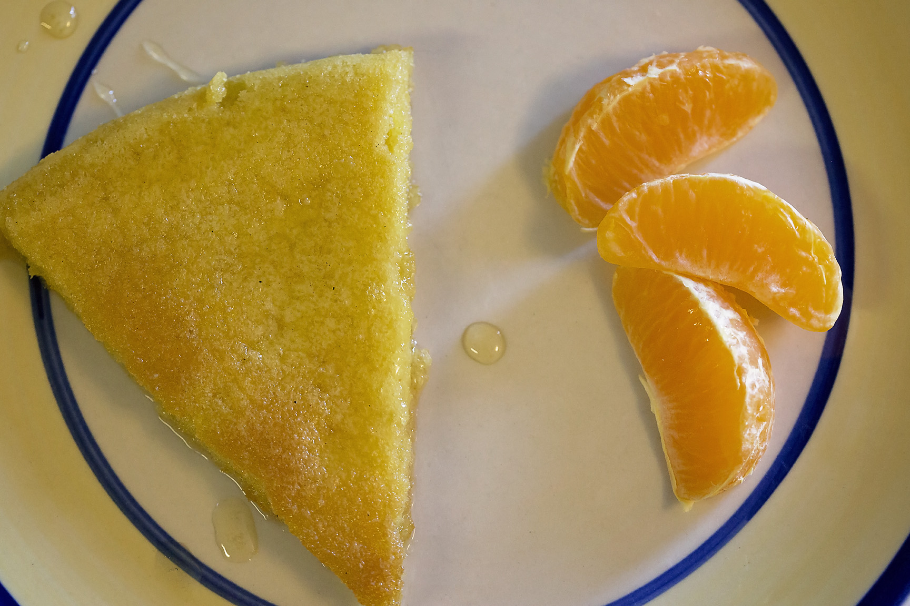

Back to Home
M'Shewsha

Description
M'Shewsha is a traditional Algerian dish often enjoyed for breakfast or
served with coffee. It features a base of beaten eggs mixed with semolina
and a touch of flour, fried until fluffy and slightly golden. Warm honey
is then poured over it, allowing it to soak in and create a rich,
sweet-savory treat [[4]].
Ingredients
- Eggs (4–6)
- Fine semolina (2 tablespoons)
- All-purpose flour (1 tablespoon)
- Sugar (optional, for extra sweetness)
- Butter or oil (for frying)
- Honey (to drizzle generously)
- Cinnamon (optional, for garnish)
Steps
- In a bowl, beat the eggs well until slightly frothy.
- Add semolina and flour, and mix into a smooth batter.
- Heat butter or oil in a large pan over medium heat.
- Pour small amounts of batter to form pancake-like shapes.
- Cook each side until lightly golden and cooked through.
- Transfer to serving plates while warm.
-
Pour warm honey generously over the top, letting it soak in before
serving.
- Garnish with cinnamon if desired.